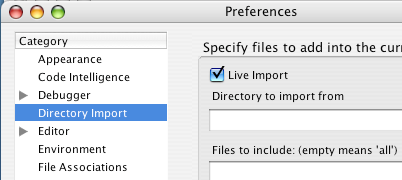
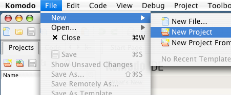
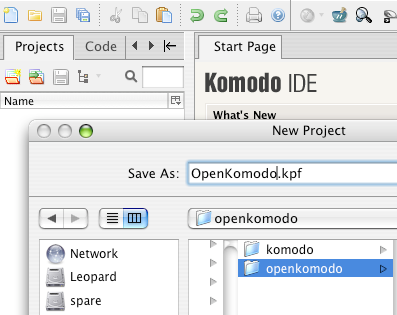
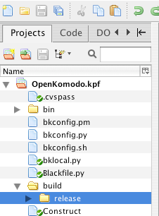

Create a new "live" project which
mirrors the contents of a directory on your filesystem.
Before you start: Check that the Live Import checkbox is selected
in the Directory Import preferences (Windows and Linux:
Edit|Preferences...|Directory Import, OS X:
Komodo|Preferences...|Directory Import). This causes
new projects to do a live import of the directory the project is
created in. If you want to create the Komodo project file in a
different location (i.e. outside of the base directory you want to
view), create a static project and add
live folders within the new project.

Select the Live Import check box if it is not
already selected.

Click Project Tools|New Project in the Projects sidebar,
or click File|New|New Project

Choose a directory in which to create your project. This will
become the base directory of the new project.

Browse the tree view of the files and directories in your new
project. Double-clicking on a file will open it in Komodo.
Right-clicking will bring up a context menu for file operations.